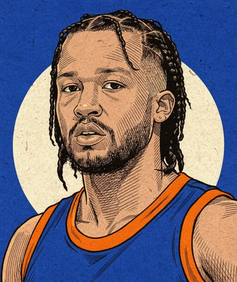
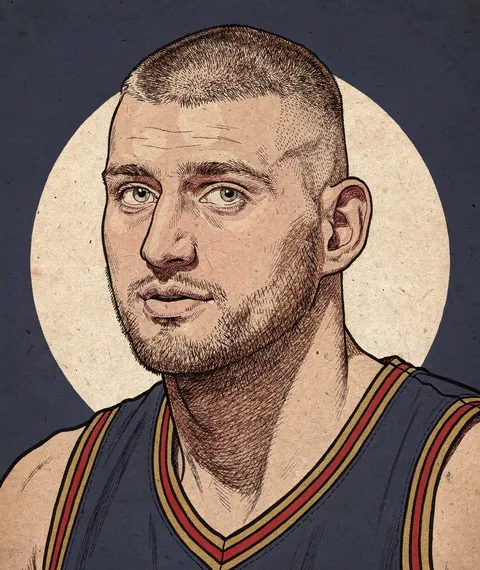
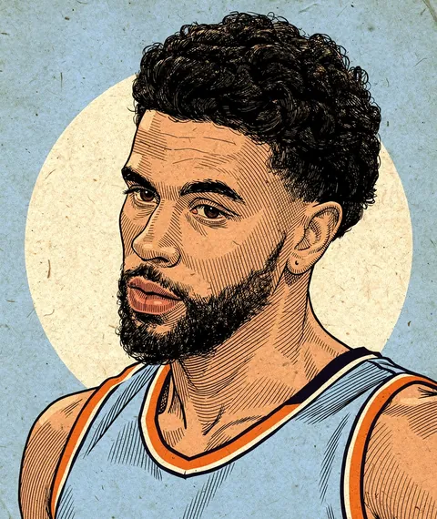
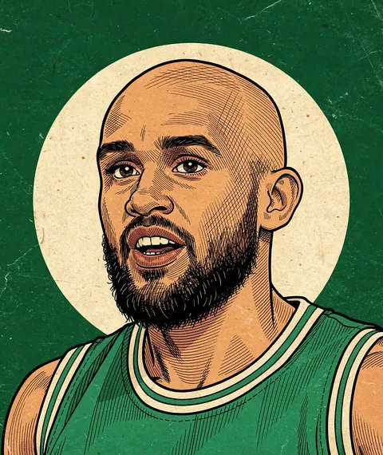
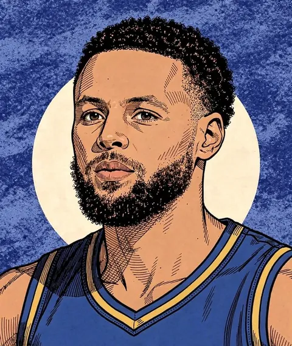
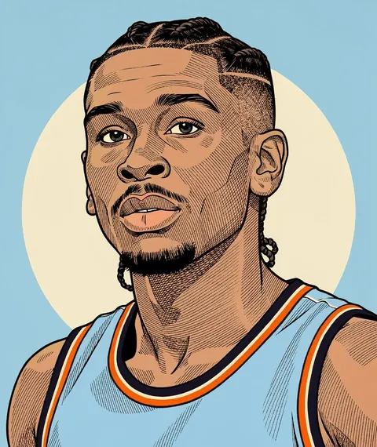
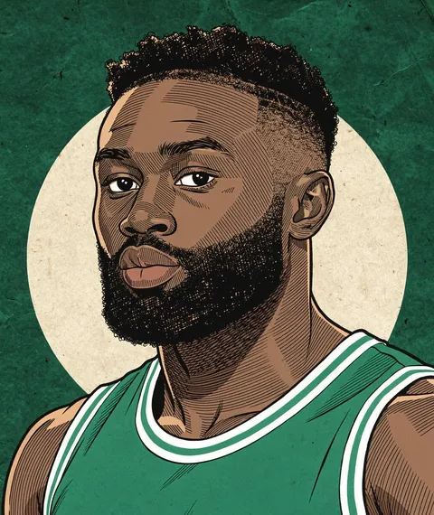
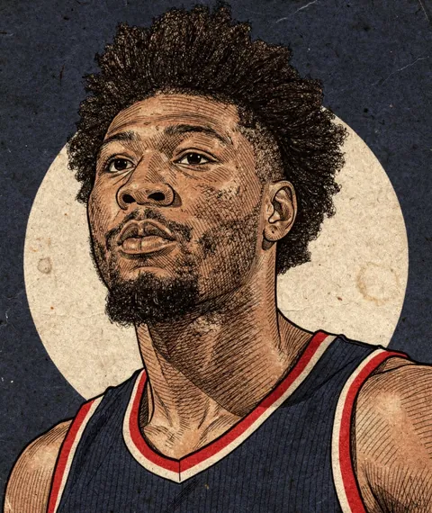

A column about what NBA players are worth, by a Celtics fan from Boston who is an economist by day, argues with his own model, and sometimes loses. Every figure is read from the boards at build time; if the model changes its mind, so do the columns.







